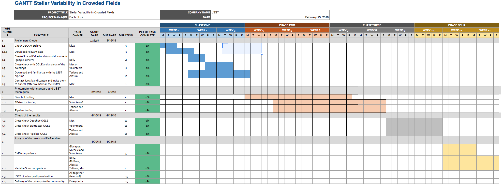
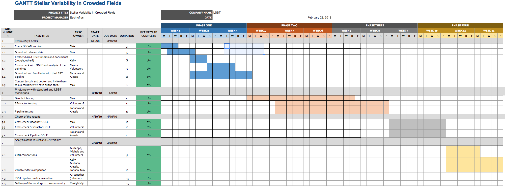

these webpages are a work in progres... .
In the meantime you can find out about us on the LSST TVS wiki
TVS Task Force
Crowded Field Photometry
Work Plan
Members:
| Massimo Dall’Ora | Chair |
| Kelly Hambleton | Spokesperson, Secretary |
| Alessia Garofalo | |
| Tatiana Muraveva | |
| Michele Fabrizio | |
| Paola Marrese | |
| Silvia Marinoni | |
| Davide Magurno | |
| Giuliana Fiorentino | |
| Giuseppe Bono |
Context
Task Force (TF) Goals
- To create a test data set for testing crowded fields. We plan to use DECam (Dark Energy Camera) data from the Galactic Bulge. This may have already been done or be currently underway by the Dark Energy team. We plan to contact the Dark Energy team to determine the status of their work and how we can help.
- To create metrics to determine the success of the pipeline. These will be based on the recovery of: periods, magnitudes, distance scale determinations and the precision on astrometric solutions.
- To test the current LSST crowded field algorithms on the DECam data set using our metrics.
- To test current working code using the DECam data set and our metrics.
- Optimize the best suited code to perform crowded field photometry on LSST data.
Work Plan and Deliverables
CFP Task Force Gantt Chart
 Before we can create a suitable work plan we need to determine the state of the work that is being undertaken by different groups. We plan to hold telecons with the LSST Data Management team and the Dark Energy team to identify where help is needed and what work needs to be done. Our near term goals are to prepare the DECam data set (if this has not already been done), create our own metrics and determine a figure of merit.
 Before we can create a suitable work plan we need to determine the state of the work that is being undertaken by different groups. We plan to hold telecons with the LSST Data Management team and the Dark Energy team to identify where help is needed and what work needs to be done. Our near term goals are to prepare the DECam data set (if this has not already been done), create our own metrics and determine a figure of merit.
{kind=link}
| Deadline | Milestone |
|---|---|
| ? | Create a figure of merit for crowded field photometry |
| ? | Identify the optimal available code for our science requirements (primarily pulsating stars) and optimize if necessary. |